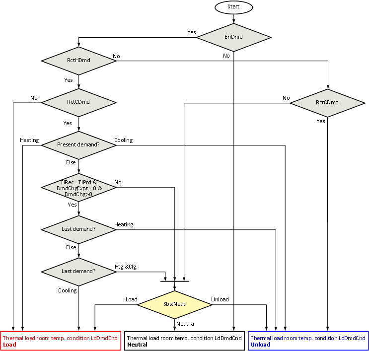
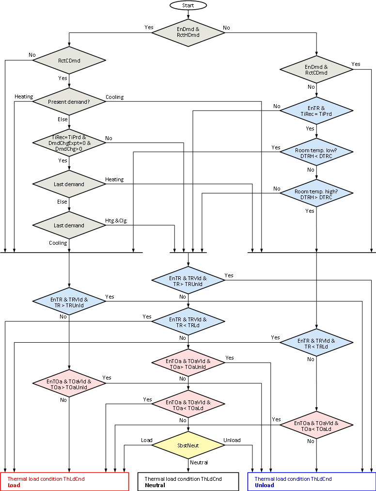
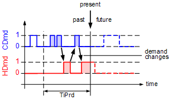

[THLOAD] Thermal load analysis
THLOAD calculates the thermal load state for a room or zone with the help of heating and cooling demand signals as well as room and outside temperature.
Functioning
THLOAD has the following functions:
- Continuous logging of heating demand [HDmd], cooling demand [CDmd], room temperature [TR], the room temperature comfort setpoints [SpHCmf], and [SpCCmf] for time period [TiPrd] (floating time period). Logging is done at a fixed interval of 15 minutes.
- Determination of recent heating demand [RctHDmd], recent cooling demand [RctCDmd], and the number of demand changes [DmdChg] within the time period [TiPrd]. [RctHDmd] and [RctCDmd] are set based on the minimum demand time [TiMinDmd].
- Calculation over the time period [TiPrd], the minimum room temperature difference for heating [DTRH], between room temperature [TR] and heating setpoint Comfort [SpHCmf] as well as minimum room temperature difference for cooling [DTRC] between the cooling setpoint Comfort [SpCCmf] and room temperature [TR].
- Calculation of the thermal load condition [ThLdCnd]. THLOAD can use the inputs [EnDmdCal], [EnTRCal], and [EnTOaCal] to specify whether the thermal load condition is based on demand signals, room temperature and/or outside temperature.
THLOAD calculates according to the following steps:
Step 1: Limit input signals to reasonable value ranges, in particular:
- The minimum demand time [TiMinDmd] is limited to ≤ [TiPrd].
- The room temperature limit for forcing unloads [TRUnld] is limited to ≥ [TRLd].
- The outside temperature limit for forcing unloads [TOaUnld] is limited to ≥ [TOaLd].
Step 2: Calculate heating demand in the past time period [TiPrd]:
- The time period for recent heating demand [TiHDmd] is calculated, i.e., the time within [TiPrd], during which [HDmd] = 1.
- If [TiHDmd] ≥ [TiMinDmd], the recent heating demand is set to [RctHDmd] = 1.
Step 3: Calculate cooling demand in the past time period [TiPrd]:
- The time period for recent cooling demand [TiCDmd] is calculated, i.e., the time within [TiPrd], during which [CDmd] = 1.
- If [TiCDmd] ≥ [TiMinDmd], the recent cooling demand is set to [RctCDmd] = 1.
Step 4: Determine the minimum room temperature difference heating [DTRH] between the room temperature [TR] and heating setpoint comfort [SpHCmf] within the past time period [TiPrd] for times during which [TRVld] = 1:
- [DTRH] is positive if [TR] was always greater than [SpHCmf] during [TiPrd] (for times when [TRVld] = 1).
- [DTRH] is negative if [TR] was at least once less than [SpHCmf] during [TiPrd] (for times when[TRVld] = 1).
- If [TRVld] = 0 during the entire period [TiPrd], [DTRH] is set to = 3.402822E+38.
Step 5: Determine the minimum room temperature difference cooling [DTRC] between the cooling setpoint comfort [SpCCmf] and room temperature [TR], during the past time period [TiPrd], for times when [TRVld] = 1:
- [DTRC] is positive if [TR] was always less than [SpCCmf] during [TiPrd] (for times when [TRVld] = 1).
- [DTRC] is negative if [TR] was at least once greater than [SpCCmf] during [TiPrd] (for times when [TRVld] = 1).
- For [TRVld] = 0 during the entire period [TiPrd], [DTRC] is set to = 3.402822E+38.
Step 6: Calculate thermal load conditions.
Thermal load demand condition
The thermal load demand condition [LdDmdCnd] represents the load condition based exclusively on heating and cooling demand signals (for [EnDmdCal] = 1). For calculation, see:

Thermal load room temperature condition
The thermal load condition room temperature [LdTRCnd] represents the load condition based exclusively on the room temperature (for [EnTRCal] = 1). For calculation, see:

Thermal load outside temperature condition
The thermal load condition outside temperature [LdTOaCnd] represents the load condition based exclusively on the outside temperature (for [EnTOaCal] = 1). For calculation, see:

Thermal load condition
The thermal load condition [ThLdCnd] represents the total load condition based on heating and cooling demand signals (for [EnDmdCal] = 1), room temperature (for [EnTRCal] = 1), and the outside temperature (for [EnTOaCal] = 1). For calculation, see:

Determine number of demand changes [DmdChg]
For the illustrated example, [DmdChg] = 3:

The number of changes between heating and cooling demand within the time period [TiPrd] is provided at the output [DmdChg]. It also counts changes when no heating or cooling demand exists between heating and cooling demand phases. If both, heating and cooling demand, exist simultaneously, it is counted as a demand change once every 15 minutes.
Determine room temperature differences heating and cooling [DTRH]/[DTRC]
The following diagram shows temperature differences between past room temperature comfort setpoints and past room temperatures.

For simplicity, the room temperature setpoints for Comfort in the graphic are constant. Calculation is the same if setpoints change during the time period [TiPrd].
Calculation of thermal load condition demand [LdDmdCnd]
The thermal load demand condition [LdDmdCnd] represents the load condition based exclusively on heating and cooling demand signals (for [EnDmdCal] = 1). For [EnDmdCal] = 0, [LdDmdCnd] is set to neutral or to [SbstNeut]. [LdDmdCnd] is used to estimate the thermal load condition with the help of present and past heating and cooling demand signals. The last 24 hours are usually used ([TiPrd] = 24h):
- This demand is supported and set to [LdDmdCnd] = Load, if within [TiPrd] only heating demand exists ([RctHDmd] = 1, [RctCDmd] = 0).
- This demand is supported and set to [LdDmdCnd] = Unload, if within [TiPrd] only cooling demand exists ([RctHDmd] = 0, [RctCDmd] = 1).
- Demand is unclear and [LdDmdCnd] = Neutral if within [TiPrd] neither heating nor cooling demand exists ([RctHDmd] = 0, [RctCDmd] = 0).
- THLOAD distinguishes various cases if within [TiPrd] both, heating and cooling demand, exist ([RctHDmd] = 1, [RctCDmd] = 1)
- If present demand is only heating ([HDmd] = 1, [CDmd] = 0), the present demand is supported and [LdDmdCnd] = Load.
- If present demand is only cooling ([HDmd] = 0, [CDmd] = 1), the present demand is supported and [LdDmdCnd] = Unload.
- If [EnDmdChg] = 0 and no present demand exists for either heating or cooling demand, it is set to [LdDmdCnd] = Neutral.
- If [EnDmdChg] = 1 and no present demand exists for heating or cooling, [LdDmdCnd] is set based on demand changes: if [DmdChg] = 0 or [DmdChgExpt] = 1 or [TiRec] < [TiPrd], it is set to [LdDmdCnd] = Neutral. Otherwise, it is assumed that the upcoming demand corresponds to the opposite of the last demand (demand changes alternately between heating and cooling) and [LdDmdCnd] is set accordingly.
DmdChgExpt – exception to demand change calculation:
- Both heating as well as cooling demand within the same 15 minutes during [TiPrd]
- Phases with no demand between heating demand phases during [TiPrd]
- Phases with no demand between cooling demand phases during [TiPrd]
Calculation of thermal load condition room temperature [LdTRCnd]
The thermal load condition room temperature [LdTRCnd] represents the load condition based exclusively on room temperature [TR] (for [EnTRCal] = 1). For [EnTRCal] = 0, [LdTRCnd] is set to neutral or to [SbstNeut]. [LdTRCnd] is used to forecast thermal load condition with the help of past room temperatures. The last 24 hours are usually used ([TiPrd] = 24h):
- [LdTRCnd] = Load if the room temperature [TR] is valid ([TRVld] = 1), and less than [TRLd]
- [LdTRCnd] = Unload if the room temperature [TR] is valid ([TRVld] = 1), and greater than [TRUnld]
- [LdTRCnd] = Unload if the room temperature (during valid phases) is in the upper comfort range ([DTRH] > [DTRC]).
- [LdTRCnd] = Load if the room temperature (during valid phases) is in the lower comfort range ([DTRH] < [DTRC]).
Calculation of thermal load condition outside temperature [LdTOaCnd]
The thermal load state outside temperature [LdTOaCnd] represents the load condition based exclusively on outside temperature [TOa] (for [EnTOaCal] = 1).
For [EnTOaCal] = 0, [LdTRCnd] is set to neutral or to [SbstNeut]. [LdTOaCnd] estimates the thermal load condition with the help of outside temperature [TOa]. The following rules (see graphic as well) apply for an outside temperature hysteresis [TOaHys] = 0:
- For [TOaVld] = 0, [LdTOaCnd] is set = [SbstNeut].
- For [TOaVld] = 1 and [TOa] ≤ [TOaLd], [LdTOaCnd] is set to = Load.
- For [TOaVld] = 1 and [TOa] ≥ [TOaUnld], [LdTOaCnd] is set to = Unload.
- For [TOaVld] = 1 and [TOaLd] < [TOa] < [TOaUnld], where [LdTOaCnd] is set to = [SbstNeut].
The transition from forced state load to neutral state at [TOaLd] + [TOaHys] takes place if the outside temperature hysteresis [TOaHys] > 0 and the transition from forced state unload to neutral states takes place for [TOaUnld] - [TOaHys].
Selection of the outside temperature [TOa] can be different depending on the application, for example:
- The actual outside temperature used for the heating curve function
- The average of the outside temperature of a past time period
- The present measured outside temperature
- A forecast value for outside temperature, e.g., from weather service
Calculation of thermal load condition [ThLdCnd]
The thermal load condition [ThLdCnd] represents the load condition based on heating and cooling demand signals (for [EnDmdCal] = 1), the room temperature (for [EnTRCal] = 1), and the outside temperature (for [EnTOaCal] = 1). [ThLdCnd] unites the states [LdDmdCnd], [LdTRCnd], and [LdTOaCnd] in one state.
Forcing by threshold values for room temperature [TRLd] and [TRUnld] has the highest priority, followed by forcing by threshold values for outside temperature [TOaLd] and [TOaUnld]. [ThLdCnd] is determined by heating and cooling demand if the room temperature and outside temperature are within the threshold values.
If there is no heating or cooling demand during [TiPrd], [ThLdCnd] is determined based on room temperature [TR] and its comfort setpoints.

[TR] and the associated [TRVld], [SpHCmf], and [SpCCmf] are polled and logged at 15 minute intervals. Thermal load calculations are based on the logged data. Forcing thermal state due to room temperature threshold values is based on the last stored values for [TR].
Pins
Input | Description | Data type | Default value |
|---|---|---|---|
|
EnFnct | Enable function Enables the function. | Boolean | 1 |
0 - The function is disabled. | |||
|
TiPrd | Time period for heating The function considers data (demand signals and room temperature signals) within a sliding, past timeframe for this period. The default value is 24 hours, the maximum value is 72 hours. | Time | 1d 0...3d |
|
SbstNeut | Substitution value Thermal state can be substituted if the subsequent application functions are unable to process the state neutral. | Integer | 3 = Neutral |
1: Load | |||
|
EnDmdCal | Enable demand calculation | Boolean | 1 |
0 - The calculation for the thermal load condition does not consider heating and cooling demand signals. | |||
|
EnDmdChg | Enable demand changing logic | Boolean | 1 |
0 - If demand within [TiPrd] changes, future demand is not calculated, i.e., [LdDmdCnd] is set = Neutral or [SbstNeut]. | |||
|
CDmd | Cooling demand Present cooling demand of the room or zone. | Boolean | 0 |
0 - Room or zone does not require cooling. | |||
|
HDmd | Heating demand Present heating demand of the room or zone. | Boolean | 0 |
0 - Room or zone does not require heating. | |||
|
TiMinDmd | Minimum time duration for demand account The time is used to calculate recent demands:
| Time | 15m 0...3d |
|
EnTRCal | Enable room temperature calculation | Boolean | 1 |
0 - The calculation of thermal load condition does not consider the room temperature. | |||
|
TR | Room temperature | Real | 20.0 [°C] 0.0…50.0 [°C] |
|
TRVld | Valid room temperature | Boolean | 1 |
0 - The room temperature is invalid, i.e., it cannot be used to calculate the thermal load condition. | |||
|
SpCCmf | Cooling setpoint for comfort Room temperature cooling setpoint for operating mode Comfort. | Real | 24.0 [°C] 0.0...50.0 [°C] |
|
SpHCmf | Heating setpoint for comfort Room temperature heating setpoint for operating mode Comfort. | Real | 21.0 [°C] 0.0...50.0 [°C] |
|
TRLd | Room temperature to force load The thermal load condition is forced to load state if the room temperature is valid and less than [TRLd]. It takes priority over the force using outside temperature limits [TOaLd] and [TOaUnld]. | Real | 15.0 [°C] 0.0…50.0 [°C] |
|
TRUnld | Room temperature to force unload The thermal load condition is forced to unload state if the room temperature is valid and greater than [TRUnld]. It takes priority over the force using outside temperature limits [TOaLd] and [TOaUnld]. | Real | 35.0 [°C] 0.0…50.0 [°C] |
|
EnTOaCal | Enable outside air temperature calculation | Boolean | 0 |
0 - The calculation of thermal load condition does not consider outside temperature. | |||
|
TOa | Outside temperature | Real | 20.0 [°C] -50.0…80.0 [°C] |
|
TOaVld | Outside air temperature valid | Boolean | 1 |
0 - The outside temperature is invalid, i.e., it cannot be used to calculate the thermal load condition. | |||
|
TOaHys | Outside temperature for switching hysteresis Hysteresis for threshold values [TOaLd] and [TOaUnld] to prevent frequent switching of the thermal load condition based on deviating outside temperature. | Real | 0.5 [K] 0.0…10.0 [°K] |
|
TOaLd | Outside air temperature to force load The thermal load condition is forced to load state if the outside temperature is valid and less than [TOaLd]. It has a lower priority than the force using room temperature limits [TRLd] and [TRUnld]. | Real | 0.0 [°C] -50.0…80.0 [°C] |
|
TOaUnld | Outside air temperature to force unload The thermal load condition is forced to unload state if the outside temperature is valid and greater than [TOaUnld]. It has lower priority than the force using room temperature limits [TRLd] and [TRUnld]. | Real | 30.0 [°C] -50.0…80.0 [°C] |
|
Reset | Reset | Boolean | 0 |
0 - Normal Mode | |||
Output | Description | Data type | Default value |
|---|---|---|---|
|
ThLdCnd | Thermal load condition The thermal load condition represents the thermal load of a room or zone while considering:
| Integer | 3 = Neutral |
1: Load | |||
|
LdDmdCnd | Thermal load demand condition The thermal load condition represents the thermal load of a room or zone under sole consideration of past heating and cooling demand. | Integer | 3 = Neutral |
1: Load | |||
|
LdTRCnd | Thermal load room temperature condition The thermal load room temperature condition represents the thermal load of a room or zone under sole consideration of past room temperatures. Note: The calculation is based on logged data. | Integer | 3 = Neutral |
1: Load | |||
|
LdTOaCnd | Thermal load outside air temperature condition The thermal load outside air temperature condition represents the thermal load of a room or zone under sole consideration of outside temperature. | Integer | 3 = Neutral |
1: Load | |||
|
RctCDmd | Recent cooling demand | Boolean | 0 |
0 - The total sum of cooling demand times within [TiPrd] is less than [TiMinDmd]. | |||
|
RctHDmd | Recent heating demand | Boolean | 0 |
0 - The total sum of heating demand times within [TiPrd] is less than [TiMinDmd]. | |||
|
TiCDmd | Time of recent cooling demand Total sum of cooling demand time within [TiPrd]. | Time | 0s |
|
TiHDmd | Time of recent heating demand Total sum of heating demand time within [TiPrd]. | Time | 0s |
|
DmdChg | Number of recent demand changes Counts all demand changes within [TiPrd] between heating and cooling demands. Changes are counted based on 15 minute intervals. Note: If heating and cooling demand are present at the same time within a 15 minute interval, then this is counted as a demand change. | Integer | 0 |
|
DTRC | Room temperature difference cooling Minimum difference {[SpCCmf] – [TR]} within [TiPrd], for times where [TRVld] = 1.
| Real | 20.0 [K] |
|
DTRH | Room temperature difference heating Minimum difference {[TR] – [SpHCmf]} within [TiPrd], for times when [TRVld] = 1.
| Real | 20.0 [K] |
|
TiRec | Time of recorded data
| Time | 0s |
|
SysUnits | System of units Indicates the system of units used by the block. | Integer | 1: International system of units (SI) (fallback) 1...5 |
1: International system of units (SI) (fallback) | |||
|
ErrCode | Error code indication | Integer | 0: No error |
= 0 - No error | |||
Application
THLOAD is intended for use in HVAC applications which include systems that support heating and cooling where operation is (nearly) free of charge. Such systems include blinds or energy recovery units in a ventilation plant.
If heating and cooling demand are available in the application, THLOAD can be configured to use their values. If heating and cooling demand are not available, THLOAD can still be used with the demand calculation disabled.
Examples
Energy efficient blinds control
Energy efficient blinds control is typically used in unoccupied rooms or buildings. Blinds control contributes to minimizing heating and cooling demand for HVAC systems such as radiators or chilled ceilings.
THLOAD can, for example, be configured as follows:
- [TiPrd] = 24hr: Considers the previous day.
- [SbstNeut] = Unload: If neutral is not supported, this state is replaced with unload.
- [EnDmdCal] = 1, [EnDmdChg] = 0, [TiMinDmd] = 15min: Recent heating and cooling demand is considered (continuing for at least 15 minutes). For changing heating and cooling demand within [TiPrd], a future demand is not anticipated.
- [EnTRCal] = 1, [TRLd] = 18 °C, [TRUnld] = 30 °C: Room temperature is considered. Force of load and unload takes place at the appropriate room temperatures.
- [EnTOaCal] = 1, [TOaLd] = 12 °C, [TOaUnld] = 26 °C, [TOaHys] = 1 K: The outside temperature is considered. Force of load and unload takes place at the appropriate outside temperatures.
Inputs for THLOAD can be interconnected as follows:
- [CDmd] and [HDmd] are interconnected with the heating and cooling demand signals for the room or zone.
- [TR] is interconnected with the room temperature. It can be a filtered room temperature.
- [TRVld] is interconnected with the validity of the room temperature measurement. [TRVld] is eventually set to = 0 for exceptions, e.g., open windows (detected by window contacts).
- [TOa] is interconnected with the outside temperature or a filtered outside temperature.
- [TOaVld] is interconnected with the validity of the outside temperature measurement.
The output [ThLdCnd] of THLOAD can be used to control the blinds position if energy-efficient blinds control is desired, for example, as follows:
- If thermal load state is equal to load, blinds take advantage of solar radiation during the day (i.e., open blinds as much as possible) and prevent heat flow from the room to the environment during the night (i.e., close blinds as much as possible).
- If thermal load state is equal to unload, blinds prevent solar radiation during the day (i.e., close blinds as much as possible) and permit heat flow from the room to the environment at night (i.e., open blinds as much as possible).
Energy-efficient control of energy recovery in ventilation plants
Energy-efficient control of energy recovery in ventilation plants can be used, for example, for run-around coils or plate heat exchangers with bypass dampers. The goal is to minimize heat or cooling demand by controlling energy recovery. THLOAD can, for example, be configured as follows:
- [TiPrd] = 24hr: Considers the previous day.
- [SbstNeut] = Neutral: Supports the state neutral.
- [EnDmdCal] = 1, [EnDmdChg] = 1, [TiMinDmd] = 15min: Recent heating and cooling demand is considered (continuing for at least 15 minutes). For changing heating and cooling demand within [TiPrd], a future demand is anticipated.
- [EnTRCal] = 0, [TRVld] = 0: Room temperature is not considered.
- [EnTOaCal] = 0, [TOaVld] = 0: The outside temperature is not considered.
Inputs for THLOAD can be interconnected as follows:
- [CDmd] and [HDmd] are interconnected with heating and cooling demand signals of active heating and cooling elements in the ventilation plant (e.g., heating or cooling registers). Additional heating and cooling demand signals can eventually be considered from other heating and cooling equipment (e.g., radiators in the rooms) acting on the room ventilated by the ventilation plant.
Output [ThLdCnd] of THLOAD can be used to control the supply air temperature setpoint for energy recovery, for example, as follows:
- The supply air temperature setpoint for energy recovery is set to the heating supply air temperature setpoint if the thermal load state is equal to load.
- The supply air temperature setpoint for energy recovery is set to the cooling supply air temperature setpoint if the thermal load state is equal to unload.
- The supply air temperature setpoint for energy recovery is set to the average of the heating supply air temperature setpoint and cooling supply air temperature setpoint if the thermal load state is equal to neutral.
Night cooling with mechanical ventilation
Night cooling with mechanical ventilation can be efficient if relatively cold outside air during the night can be used to precool a building. Yet setting control functions for night cooling is difficult: it is often unclear as to when night cooling is more beneficial than cooling during the day. In particular, night cooling should not cool unnecessarily. THLOAD can, for example, be configured as follows:
- [TiPrd] = 24hr: Considers the previous day.
- [SbstNeut] = Neutral: Supports the state neutral.
- [EnDmdCal] = 1, [EnDmdChg] = 0, [TiMinDmd] = 15min: Recent heating and cooling demand is considered (continuing for at least 15 minutes). For changing heating and cooling demand within [TiPrd], a future demand is not anticipated.
- [EnTRCal] = 1, [TRLd] = 18 °C, [TRUnld] = 30 °C: Room temperature is considered. Force of load and unload takes place at the appropriate room temperatures.
- [EnTOaCal] = 0, [TOaVld] = 0: The outside temperature is not considered.
Inputs for THLOAD can be interconnected as follows:
- [CDmd] and [HDmd] are interconnected with heating and cooling demand signals for active heating and cooling elements of the ventilation plant (e.g., heating and cooling registers) as well as additional heating and cooling demand signals from heating and cooling equipment (e.g., chilled ceilings in the rooms) acting on rooms ventilated by the ventilation plant.
- [TR] is interconnected with the room temperature. It may be a filtered room temperature.
- [TRVld] is interconnected with the validity of the room temperature measurement. In addition, [TRVld] is set to = 0 during the period for night cooling and then some more time, e.g., 1 hour.
The output [ThLdCnd] for THLOAD can be used as a condition for night cooling:
- Night cooling is enabled if the thermal load state is equal to unload. Additional conditions must be met for night cooling, e.g., using function block NGTC.
- Night cooling is not enabled if the thermal load state is not equal to unload.